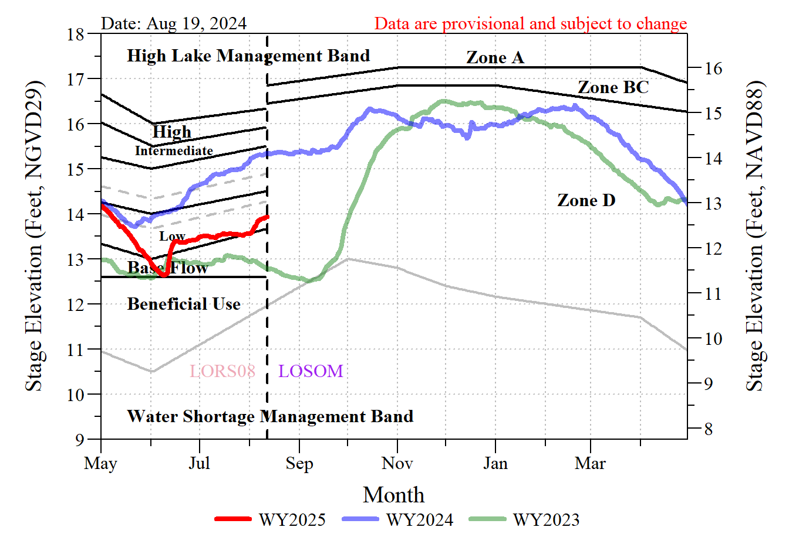
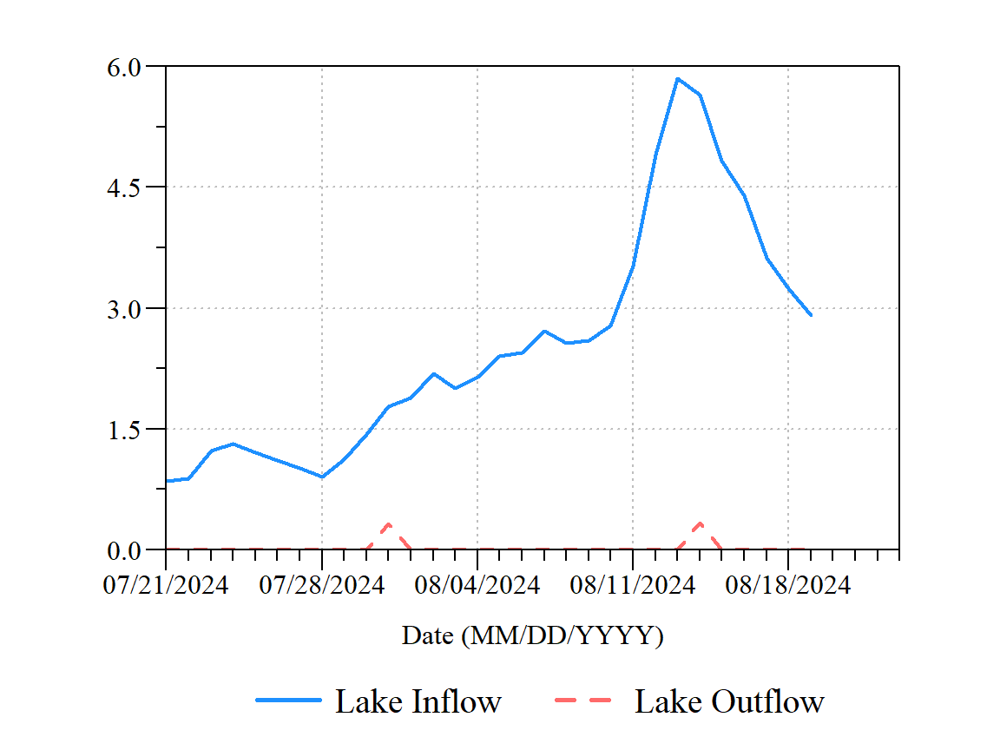

Lake Okeechobee
Updated: 2024-08-20 13:49:00 EDT
Regulation Schedule
For details on the current Lake Okeechobee Regulation Schedule, please refer to the Lake Okeechobee System Operating Manual Water Control Plan (LOSOM WCP).
Currently, Lake Okeechobee is in Zone D of the LOSOM regulation schedule. The current average lake stage is 1.9 Ft above the Zone D floor.
Date | Water Year | Stage | 7-Day Recession Rate | 30-Day Recession Rate |
|---|---|---|---|---|
08-19 | 2022 | 14.43 | 0.30 | - NR - |
08-19 | 2023 | 12.71 | -0.07 | -0.36 |
08-19 | 2024 | 15.36 | 0.02 | 0.39 |
08-19 | 2025 | 14.06 | 0.12 | 0.49 |
Discharge
[1] 1
[1] 2
[1] 3
[1] 4
[1] 5
[1] 6
[1] 7
Date | Measured Inflow | Measured Outflow | Predicted Storage Volume (kAcft) A | Δ Storage (kAcft) |
|---|---|---|---|---|
2024-08-19 | 2.91 | 0.00 | 3,378 | 4.00 |
A Predicted storage volume based on fitted model to data presented in Table 7-8 of LOSOM WCP. Model is Storage (kAcft) = 3.73 * STAGE^1.66 | ||||